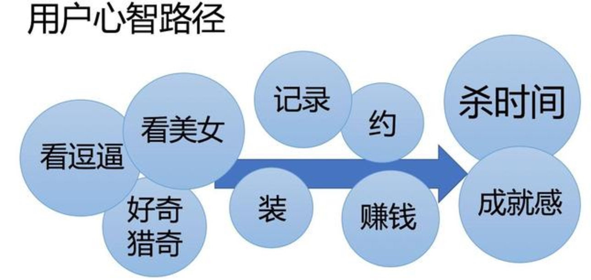

历史
LBS
LBS+群组 （将一对一模式下难以破冰和留存的尴尬，化解于群组的集体交流中）
2014年的陌陌6.0，唐岩尝试淡化附近的人，将附近的动态内容作为首选的用户关注点，结果因数据受挫，不得不在后来的版本迭代中又将附近的人放回主帧。这也说明了一个问题，就是强行挑战用户心智定位，即使强势如陌陌，也是难以如愿
2015年9月，陌陌现场上线。11月到2016年4月，依次开放红人直播和全民直播。陌陌的直播之路就此打开，视频内容与荷尔蒙社交相得益彰，得不到总可以看得到，花点钱还可以成功吸引主播的注意。从YY时代发展而来的秀场模式，在手机直播产品上焕发第二春，更有人笑称为“云坐台”。
在目前的附近的人、群组、直播、时刻（短视频）、点点（类似Tinder）模块之上，会有更进一步的视频化。
充分视频化的陌陌，将在现有的社交之外，打造更多的使用场景，给用户赋能，让社交和人变得更立体，并将低频的陌生人社交延伸到高频的日常内容生产和消费。短视频-直播社交平台的用户心智

财报
就在今天晚上，陌陌发布了发布了截至 12 月 31 日的 2016 财年第四季度及全年财报。可谓是亮点多多，喜讯连连。
首先看一下第四季度财报情况，第四季度，陌陌净营收为 2.461 亿美元，同比增长 524%。归属于陌陌的净利润为 8380 万美元，而上年同期净利润为 610 万美元。基于非美国通用会计准则，归属于陌陌的净利润为 9150 万美元，与上年同期的净利润 1180 万美元相比增长 674%。
再看一下全年的情况，2016 财年，陌陌净营收为 5.531 亿美元，同比增长 313%。归属于陌陌的净利润为 1.453 亿美元，而 2015 财年净利润为 1370 万美元。基于非美国通用会计准则，归属于陌陌的净利润为 1.77 亿美元，而 2015 财年净利润为 3110 万美元。
另外，经历了连续四个季度的稳定回升后，直到 2016 年 12 月，陌陌月活跃用户数量 (MAU) 达到了 8110 万，而 2015 年 12 月为 6980 万。更是超越了 2015 年年初的历史最高峰。
正如陌陌董事长兼 CEO 唐岩所说，2016 年四季度对于陌陌是一个重要的里程碑，也是对 2016 年全年的完美收官，“我们的总营收和净利润都创下了历史新高”。
陌陌营收的大幅度增长主要与陌陌旗下四大业务紧密相关：
- 直播服务自 2015 年第三季度上线，继续保持强劲增长势头。在 2016 年第四季度产生营收 1.948 亿美元。直播服务付费用户显著增长，2016 年第四季度直播服务的付费用户达 350 万。
- 移动营销方面，由于新客户的增加和广告销售代理订单的增加，以及信息流广告服务的 eCPM(有效千人展示费用) 增长。陌陌 2016 年第四季度移动营销服务营收为 1970 万美元，比上一年同期的 1530 万美元相比增长 29%。
- 增值业务(陌陌增值业务包括会员订阅营收以及 2016 年四季度上线的虚拟礼物服务) 方面，由于付费会员数量的增加，SVIP 会员套餐订阅量的增加，以及新上线的虚拟礼物服务。2016 年第四季度陌陌增值业务收入达到 1910 万美元，同比上一年的 1460 万美元增长 31%。据悉，截至 2016 年 12 月 31 日，陌陌会员人数为 350 万，上一年同期为 290 万。
移动游戏方面，得益于自研游戏的贡献，陌陌 2016 年第四季度移动游戏营收大 1130 万美元，同比上一年同期的 780 万美元增长 45%。
不过陌陌取得好成绩的背后，也有着其巨额的广告推广等方面的支出，仅 2016 年第四季度，陌陌的成本和支出就达 1.577 亿美元，比上一年同期的 3610 万美元增长 336%。真所谓舍不着孩子套不找狼。
据了解，这部分支出主要都用在了主播分成、市场营销与推广、第三方支付渠道分成、以及人员与基础建设等上。
另外，陌陌还预计 2017 年第一季度的净营收将在 2.38 亿美元至 2.43 亿美元之间，同比增长在 367%至 377%之间。